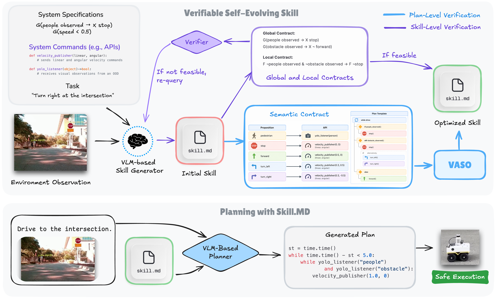
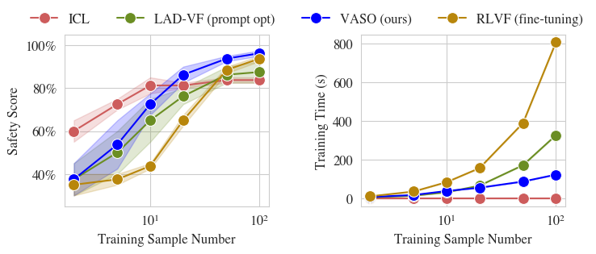
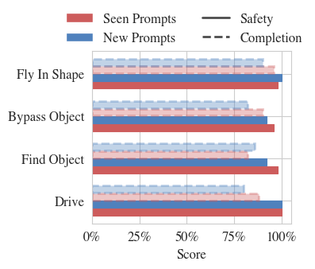
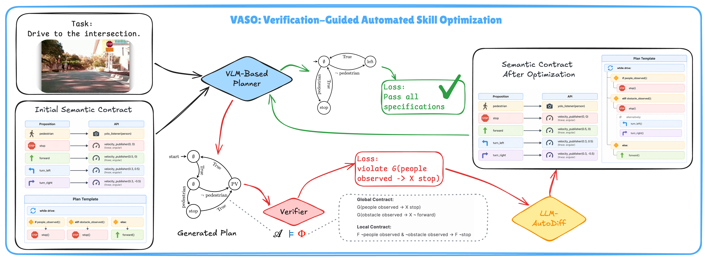

Generate
A foundation model proposes a reusable skill with a local rule and semantic contract.
Anonymous submission
VASO closes the loop between formal verification and LLM-generated robot skills: verifier counterexamples become textual optimization feedback for reusable skill contracts, improving safety without fine-tuning model weights.
Abstract
Reusable robot skills are becoming the basic units through which embodied agents turn open-ended instructions into long-horizon physical behavior. While foundation models have lowered the cost of creating these skills, the cost of trusting them remains high. Existing skill-evolution loops refine skills through execution feedback, unit tests, environment reward, or LLM self-critique, but these signals only provide trace-level evidence.
VASO represents each skill as a semantic contract with a formal interface for model checking and a planner-facing interface for executable behavior generation. When verification fails, VASO translates the counterexample trace into a textual gradient that updates the reusable skill contract while keeping foundation-model weights frozen.
Method

A foundation model proposes a reusable skill with a local rule and semantic contract.
A model checker evaluates both skill-level feasibility and plan-level safety.
Counterexample traces become textual gradients that update the skill contract.
Real-Robot Videos
Execution Figures
Results


System

Resources
The anonymous paper PDF will be linked here when the submission package is ready.
We will make the code public after acceptance due to the anonymity policy.
Citation information will be added after publication details are available.